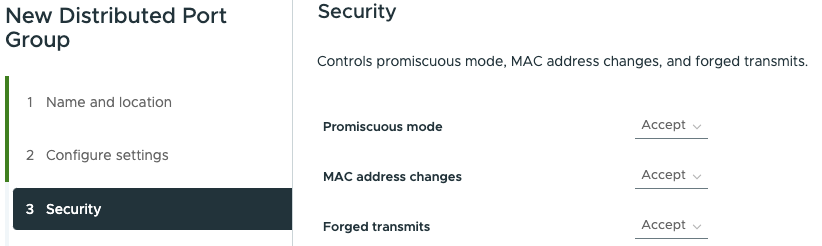

Holodeck is a toolkit designed to provide a standardized and automated method to deploy nested VMware Cloud
Foundation (VCF) environments on a VMware ESX host or a vSphere cluster. These environments are ideal for technical capability testing by
multiple teams inside a data center to explore hands-on exercises showcasing VCF capabilities to deliver a customer managed
VMware Private Cloud. Holodeck is only to be used for a testing and training environment; it is ideal for anyone
wanting to gain a better understanding of how VCF functions across many use cases and capabilities. Currently, there are
two different versions of the Holodeck supported - Holodeck 5.2x supporting VCF 5.2.x and Holodeck 9.0 supporting VCF 5.2.x and VCF 9.x.
Advantages of Holodeck
While there are multiple ways to deploy nested VCF environments, this can be time consuming and may require specific settings to ensure optimal experience.
That's where Holodeck comes in. Some of the challenges Holodeck helps overcome are:
Reduced hardware requirements: When operating in a physical environment, VCF requires four vSAN Ready Nodes for the
management domain, and additional hosts for adding clusters or workload domains. In a nested environment, this same four
to eight hosts are easily virtualized to run on a single ESX host or a vSphere cluster.
Self-contained services: Holodeck comes with built-in common infrastructure services, such as NTP, DNS, AD,
Certificate Services and DHCP within the environment, removing the need to rely on data center provided services during
testing. Each environment needs a single external IP.
Isolated networking: Holodeck removes the need for VLAN and BGP connections in the customer network early in the testing phase.
Isolation between environments: Each Holodeck deployment is completely self-contained. This avoids conflicts with existing
network configurations and allows for the deployment of multiple nested environments with no concerns for overlap.
Multiple VCF deployments on a single VMware ESX host of sufficient capacity: A typical VCF Standard Architecture
deployment of four node management domain and three node VI workload domain requires approximately 24 CPU cores, 325GB memory and 1.1TB disk for VCF 9.0.
Automation and repeatability: The deployment of a nested VCF environments is almost completely hands-off, and easily repeatable.
Holodeck Environment Overview
Each Holodeck environment contains:
A Holorouter appliance (photon OS based) with built-in networking services such as DNS, DHCP, NTP, Proxy, dynamic routing (BGP), L2 switching and optional webtop (virtual desktop) capability
Support for VCF and VVF deployments
vSAN ESA and OSA support
Support for online and offline depot with proxy for VCF Installer
Management Domain deployed with 4 nested hosts deployed as vSAN ready nodes including VCF Installer, VMware vCenter, VMware NSX, VCF Operations, VMware SDDC Manager, VCF Automation (optional)
Optional Workload Domain deployed with 3 nested hosts deployed as vSAN ready nodes including VMware vCenter, VMware NSX and Supervisor (optional)
Optional Supervisor deployment in management domain or workload domain
Optional NSX Edge Cluster deployment in management and/or workload domain
VCF Automation All Apps Org deployment as a Day 2 operation
Deploy one or many additional 3-node vSphere cluster in management domain via Day 2 operations
Support for provision-only mode (deploy VCF Installer and ESX hosts to allow greenfield deployment experience)
Custom CIDR support for Holodeck network
Custom VLAN support for Holodeck network
Custom DNS Domain for Holodeck environment
A Holorouter appliance (photon OS based) with built-in networking services such as DNS, DHCP, NTP, Proxy, dynamic routing (BGP), L2 switching and optional webtop (virtual desktop) capability
Support for VCF deployment only
vSAN OSA support only
Management Domain deployed with 4 nested hosts deployed as vSAN ready nodes including VMware Cloud Builder, VMware vCenter, VMware NSX, VMware SDDC-Manager
Optional Workload Domain deployed with 3 nested hosts deployed as vSAN ready nodes including VMware vCenter and VMware NSX
Optional NSX Edge Cluster deployment in management and/or workload domain
Deploy one or many additional 3-node vSphere cluster in management domain
Custom CIDR support for Holodeck network
Custom VLAN support for Holodeck network
Custom DNS Domain for Holodeck environment
Note: Holodeck 9.0 is not a VMware supported product, it is similar to a Fling.
Holodeck 9.0 supports nested VCF deployment for versions 5.2 and 9.0. This can be deployed either on a single stand-alone ESX host or a vSphere cluster based on resource availability. Please check the Pre-requisites section
Holodeck 9.0 Support Status
Holodeck 9.0 is not a VMware supported product; it is similar to a Fling. It is intended for testing and training environments.
Holodeck 9.0 has been developed using PowerShell and VMware PowerCLI. We have bundled and packaged everything needed into a powershell module called
Holodeck. This powershell module is provided to you as an in-built functionality within the OVA we ship called Holorouter.
Each Holodeck environment runs an identical nested configuration. A Holodeck environment can be deployed as a Single or
Dual site Configuration. Separation of the environments and between sites within an environment is handled at the
VMware vSphere Standard Switch (vSS) or VMware vSphere Distributed Switch (vDS) level. Each Holodeck pod is configured with a unique
port group on the vSS/vDS per site. A VMware vSphere Port Group is configured on each vSS/vDS and configured as a VLAN trunk to facilitate communication.
Components on the port group use VLAN tagging to isolate communications between nested VLANs. This removes the
need to have physical VLANs plumbed to the ESX host to support nested labs. There is also an option to use an NSX overlay segment instead of a vSS/vDS
port group if available.
Holorouter Overview
HoloRouter is an appliance that serves as the infrastructure backbone for Holodeck. It provides infrastructure services such as Layer-3 routing, Firewall, DHCP, DNS, NTP, BGP, Proxy, Job scheduling, etc. Through these services, HoloRouter connects the nested VCF environment to the external networks. It also provides inter-connectivity between different networks in the nested VCF environment. If you are not using custom VLANs for Holodeck, then for Site-a, VLANs 0, 10 through 25 and for Site-b, VLANs 40 through 58 are used. It is equipped with a built-in webtop (Desktop UI) which allows users access to HoloRouter via a GUI. Through the webtop service, users get easy GUI access to the nested VCF environment.
Scope of Services:
DNS: local to Site-a and Site-b of nested VCF environment, acts as forwarder
DHCP: local to Site-a and Site-b of nested VCF environment
NTP: local to Site-a and Site-b of nested VCF environment
L3 routing between VLANs of Site-a and Site-b of nested VCF environment
Firewall to control traffic to and from external networks and between the networks in the nested VCF environment
BGP: to establish relationship with NSX Tier-0 gateway for outbound connectivity for overlay networks
Proxy: allows users to control the outbound connectivity for the nested VCF environment
Job scheduling: allows users to schedule commands/scripts to be run recursively
Webtop: allows users to access HoloRouter and nested VCF environment via a simple GUI
Powershell with VMware PowerCLI and other associated modules: allows users to consume Holodeck
All required packages to deploy and operate Holodeck
Concepts
Centralized Configuration: Holodeck 9.0 has been designed around the concept of a centralized config file that acts as the source of truth for nested VCF deployments. The config file is a JSON file with a set of templates that are needed to run Holodeck. Customers are not expected to interact with the config file directly or edit it. We have built powershell cmdlets that help create, edit or import the config file as needed. The default template for config file is stored in /holodeck-runtime/templates/config.json. This config.json file is replicated and placed in /holodeck-runtime/config/<config-ID>.json when a new holodeck config is created using the cmdlet New-HoloDeckConfig.
Idempotency: We know that deploying an entire full stack SDDC deployment can be time consuming. We also know that this time can increase even further when performing nested deployments. We've all been in a situation where we reach towards the end of the deployment only to realize we missed something minor that causes deployment failure and we have to start all over again. To solve this challenge, we've brought in the idempotency feature in Holodeck 9.0. We store the state of the holodeck deployment on Holorouter thus allowing users to run the same command used to deploy Holodeck and pick up right where the code failed, eliminating the need to restart entire deployment or proceed manually in case of failure.
Automated Networking: Assigning VLANs, IP addresses, routes etc for each of your deployments can seem like a daunting task. We take this pain away in Holodeck 9.0. We use a default CIDR (10.1.0.0/20) and build out the entire networking including DNS mapping for each of your nested hosts and VCF components, entire routing including BGP setup for NSX Edge peering. For end users looking to deploy Holodeck in a custom CIDR, we provide the option to bring in your own CIDR of /20 size as an input parameter and we automatically use that to deploy VCF in the CIDR you provide. End users also get an option to specify their own VLANs and DNS domain for the Holodeck environment. Holodeck uses vcf.lab as the default DNS domain but users can specify a custom DNS domain during deployment.
Built-In PreChecks: Holodeck 9.0 runs a set of pre-checks when a new deployment is run to ensure everything needed is available such as all the required binaries are available in the right location or not, is the target host reachable etc.
Holodeck Networking
Let's take a look at the default VLANs used within the Holodeck Network for Site A:
Download the Required Software
Navigate to the Downloads Page to download Holodeck binaries.
Pre-requisites
Physical Host requirements
VCF 5.2
Single Site
Dual Site
CPU
16
32
Memory
384 GB
1TB
Disk
2 TB
4TB
If deploying VCF Automation with vSAN ESA:
VCF 9.0
Single Site
Dual Site
CPU
32
64
Memory
325 GB
768 GB
Disk
1.1 TB
2.5TB
If deploying VCF Automation with vSAN OSA:
VCF 9.0
Single Site
Dual Site
CPU
24
48
Memory
325 GB
768 GB
Disk
1.1 TB
2.5TB
VVF 9.0
Single Site
Dual Site
CPU
12
24
Memory
256 GB
512 GB
Disk
1 TB
2TB
Configuration requirements
Ensure MTU of vDS/vSS/NSX switch is set to 9000.
Create a dedicated trunk port on the vSwitch (vSS) or vDS for connecting to Holorouter. Dedicated port group ensures Holodeck does not interfere with your environment's networking. An NSX overlay trunk port group can be used instead as well.
If vSS/vDS port group is used, enable security settings on the trunk port group as below: Figure: Security Settings for vSS Port Group Figure: Security Settings for vDS Port Group
If NSX port group is used, ensure the type is Overlay and allow VLANs 0 to 4094 (or if using default VLANs, at a minimum VLANs 0,10-25 for Site A and 40-58 for Site-B; if using custom VLANs, VLAN 0 and custom VLAN range). Create custom segment profiles with settings as per below by navigating to Networking --> Segments tab on the left navigation bar, then click on Profiles tab on the right, click on Add segment profile and select the profiles as per below
Figure: IP Discovery Profile in NSX Figure: MAC Discovery Profile in NSX Figure: Segment Security Profile in NSX
Once the profiles have been created, navigate to the overlay segment you wish to use and edit the segment and update the segment profiles association.
If a vCenter is used as the target for deploying nested VCF lab, then VLANs 0, 10 through 25 and 40 through 58 (or VLAN 0 and custom VLAN range as specified by the user) need to be allowed on the physical switches to allow inter-host communication within the vSphere cluster where the nested VCF deployment will occur.
Target Host Configuration
Version vSphere 8.0u3 and 9.0 have been tested and are supported
Stand-alone non vCenter Server managed host or a vSphere cluster managed by a VMware vCenter server instance
Virtual Standard switch and port groups configured per guidelines
External/Customer networks required
ESX host management IP (one per host)
4 CPU, 4 GB RAM and 75 GB storage for Holorouter (Internet access is optional)
Backing storage should be SSD/NVMe based
Holorouter external IP address per Holodeck Environment
NTP service needs to be enabled and an NTP server must be configured. If using vCenter as the target, then all hosts within the vCenter cluster must have NTP running and configured.
Licensing
Holodeck 9.0 only supports VCF 5.2.x and 9.0.x in "License Later" deployment mode. This mode enables all functionality for 90 days from the date of
install for VCF 9.0 and for 60 days for VCF 5.2. After that time period expires, the environment will need to be redeployed, or license
must be added. Licensing is the responsibility of the end-user to ensure they procure the appropriate licenses by working with
their account teams.
Offline Depot
Holodeck 9.0 supports both online and offline depot modes for VCF 9.x deployments. If you plan to use an offline depot (e.g., in environments with limited or no internet connectivity), you will need to set up the Offline Depot before initiating your Holodeck deployment. The offline depot provides faster download speeds, content curation, and is essential for air-gapped environments.
For detailed instructions on deploying and configuring the Offline Depot Appliance, including populating binaries, and integrating with Holodeck, please refer to the dedicated Offline Depot page.
Note
The offline depot is applicable only for VCF 9.x deployments. VCF 5.2.x deployments use Cloud Builder and do not require an offline depot.
Note
If using an existing an existing Offline depot with previous VCF 9 binaries available, ensure you use the latest manifest available on Broadcom Support Portal.
Deployment
Ensure all the pre-requistes stated earlier are completed.
Deploy Holorouter OVA
Holodeck 9.0 supports deployments on both stand-alone ESX hosts as well as vCenter as target. Choose the appropriate tab below to follow the instructions for your specific target to deploy Holorouter.
Log in to your target ESX host web interface "https://"
Right Click "Virtual Machines" and select "Create/Register VM"
In the modal window select "Deploy a virtual machine from OVF or OVA file"
Give the VM a name and select the Holorouter OVA you downloaded previously
Select the appropriate Storage and Networking where your Holodeck instance will be deployed. You will select an (External) port group for Management and then another (Trunk) for Site A and Site B - With the default Site configurations you can effectively use the same port group for both sites (They are on discrete VLANs and subnets).
Agree to the EULA
To use DHCP leave the boxes blank, if your DHCP does not offer a DNS server, please fill that in. The other options is to statically assign a Management IP, CIDR, Gateway and DNS that will have access to the rest of your network, this IP can be used to access Holorouter and the components that will be deployed by Holodeck.
Select the checkboxes for SSH and/or Webtop
NOTE If Webtop is selected you'll have a "light" desktop with a browser available on port 30000 of the holorouter management IP. There is no authentication so be careful not to expose this externally, or do not select this option if you do not want it exposed.
Click Finish
Log in to your vCenter server https://
Right click your cluster and select "Deploy OVF Template"
Give the VM a name and select the Holorouter OVA you downloaded previously
Select the appropriate Storage and Networking where your Holodeck instance will be deployed. You will select an (External) port group for Management and then another (Trunk) for Site A and Site B - With the default Site configurations you can effectively use the same port group for both sites (They are on discrete VLANs and subnets).
To use DHCP leave the boxes blank, if your DHCP does not offer a DNS server, please fill that in. The other options is to statically assign a Management IP/CIDR/GW/DNS that will have access to the rest of your network, this IP can be used to access Holorouter and the components that will be deployed by Holodeck.
Select the checkboxes for SSH and/or Webtop
NOTE If Webtop is selected you'll have a "light" desktop with a browser available on port 30000 of the holorouter management IP. There is no authentication so be careful not to expose this externally, or do not select this option if you do not want it exposed.
Click Finish
Accessing Holodeck Environment
Users access to the Holodeck environment is via the Holorouter. Access to Holorouter is available via two paths:
For UI access, open a web browser from a JumpHost or Console that has access to the external IP of Holorouter and navigate to the URL http://:30000
For CLI access, SSH to Holorouter using the command:
ssh root@<Holorouter IP>
Use the password that was set for Holorouter during OVA deployment.
Stage software to build host
Upload the binaries for VCF Installer/Cloud Builder and VMware ESX that were downloaded in the Pre-requisites section to the below folder on holorouter:
VCF Version
Folder Path
VCF 9.0.2.0
/holodeck-runtime/bin/9.0.2.0/
VCF 9.0.1.0
/holodeck-runtime/bin/9.0.1.0/
VCF 9.0.0.0
/holodeck-runtime/bin/9.0.0.0/
VCF 5.2.2
/holodeck-runtime/bin/5.2.2/
VCF 5.2.1
/holodeck-runtime/bin/5.2.1/
VCF 5.2
/holodeck-runtime/bin/5.2/
The files can be downloaded by accessing the Broadcom Support Portal within the webtop UI (assuming proper entitlement is available for end-user)
Another option is to download the files locally and use scp to copy the files using the below command:
For VCF 9.0.2.0:
scp /<local-path>/<ESX ISO File Name> root@<Holorouter-IP>:/holodeck-runtime/bin/9.0.2.0/
scp /<local-path>/<VCF Installer OVA File Name> root@<Holorouter-IP>:/holodeck-runtime/bin/9.0.2.0/
For VCF 9.0.1.0:
scp /<local-path>/<ESX ISO File Name> root@<Holorouter-IP>:/holodeck-runtime/bin/9.0.1.0/
scp /<local-path>/<VCF Installer OVA File Name> root@<Holorouter-IP>:/holodeck-runtime/bin/9.0.1.0/
For VCF 9.0.0.0:
scp /<local-path>/<ESX ISO File Name> root@<Holorouter-IP>:/holodeck-runtime/bin/9.0.0.0/
scp /<local-path>/<VCF Installer OVA File Name> root@<Holorouter-IP>:/holodeck-runtime/bin/9.0.0.0/
Note
Holodeck recommends VCF Installer 9.0.2.0 for deploying VCF 9.0.0.0, VCF 9.0.1.0 and VCF 9.0.2.0.
VCF Installer 9.0.0.0 is no longer supported on Holodeck for nested VCF deployments.
For VCF 5.2.2:
scp /<local-path>/<ESX ISO File Name> root@<Holorouter-IP>:/holodeck-runtime/bin/5.2.2/
scp /<local-path>/<VCF Installer OVA File Name> root@<Holorouter-IP>:/holodeck-runtime/bin/5.2.2/
For VCF 5.2.1:
scp /<local-path>/<ESX ISO File Name> root@<Holorouter-IP>:/holodeck-runtime/bin/5.2.1/
scp /<local-path>/<VCF Installer OVA File Name> root@<Holorouter-IP>:/holodeck-runtime/bin/5.2.1/
For VCF 5.2:
scp /<local-path>/<ESX ISO File Name> root@<Holorouter-IP>:/holodeck-runtime/bin/5.2/
scp /<local-path>/<VCF Installer OVA File Name> root@<Holorouter-IP>:/holodeck-runtime/bin/5.2/
Run Holodeck deployment
Once logged in to Holorouter via SSH, run the following commands:
Open PowerShell:
pwsh
Use the command below to create a new Holodeck config. This command creates a config file specific for your deployment with a unique config ID and loads the config file into the $config variable.
Each Holodeck configuration file is mapped to a single deployment. Always create a new config for each new deployment. Do not re-use the same config for multiple deployments as it may lead to state conflicts and unpredictable behavior.
Multiple config files can be created by running the above command multiple times for different use-cases such as 1 config for VCF 5.2 deployment and another for VCF 9.0 deployment.
To check which config is currently loaded in your powershell session, run the below command and check the config ID or description:
$config
Note that $config is specific to a powershell session. If you exit powershell and open a new session, you will need to import the config using:
Get-HoloDeckConfig
The above command gives a list of config files available. Note the config ID for your specific deployment to use in the below command.
Import-HoloDeckConfig -ConfigId <String>
The same procedure can be followed if you wish to switch from one config file to another as well.
Deploy a Holodeck instance using the New-HoloDeckInstance command. This command can be operated in 4 different ways as shown below:
If you notice closely, some of the parameters have a square bracket around them while others do not. The ones that have square brackets around them are optional parameters. With this information, let's look at each option in the Syntax section of the above image.
In the second option, we see that -ManagementOnly, -Version and -InstanceID are mandatory, showcasing this syntax is used to deploy a nested VCF deployment with management domain only.
Parameter
Type
Required
Description
Options
Default Value
Version
String
Mandatory
Provide VCF version
"9.0.0.0", "9.0.1.0", "9.0.2.0", "5.2", "5.2.1" or "5.2.2"
InstanceID
String
Mandatory
Instance ID used as a prefix before all nested VMs deployed as part of Holodeck to uniquely identify the instance.
String
CIDR
Array of Strings
Optional
VCF instance is deployed by default in the 10.1.0.0/20 CIDR for Site a and 10.2.0.0/20 for Site b. If you wish to use a custom CIDR, provide a CIDR of /20 size. For single site (site a) deployment, specify only a single CIDR. For site b deployment in a dual site scenario, specify an array of CIDRs using an array [n,m] where n and m are the CIDRs for Site a and Site b respectively.
String of format: ["10.3.0.0/20","10.4.0.0/20"]
["10.1.0.0/20","10.2.0.0/20"]
vSANMode
String
Optional
Support for both vSAN Express Storage Architecture (ESA) and Original Storage Architecture (OSA)
"ESA" or "OSA"
"OSA"
ManagementOnly
Switch
Mandatory
Deploys a VCF instance with Management domain only
NA
NsxEdgeClusterMgmtDomain
Switch
Optional
Deploys an NSX Edge Cluster in Management domain (AVN included if deploying VCF 5.2)
NA
DeployVcfAutomation
Switch
Optional
Deploys VCF Automation. This is applicable only if -Version is set to "9.0.0.0" and beyond. VCF Automation is not deployed by default unless this switch is used.
NA
DeploySupervisorMgmtDomain
Switch
Optional
Deploys Supervisor in management domain. Applicable only for VCF 9.0.0.0 and beyond.
NA
ProvisionOnly
Switch
Optional
Deploys nested ESX hosts and VCF Installer/Cloud Builder and provides JSON API specs for performing VCF deployment manually
NA
VLANRangeStart
Array of Integers
Optional
VCF instance is deployed by default with VLANs 0, 10 through 25 for Site a and 40 through 58 for Site b. If you wish to use a custom VLAN range, provide the start of the custom VLAN range using this paramater. You can specify only an integerfor a single site (site a) deployment. For site b (in a dual site deployment scenario), you should specify an array [n,m] where n and m are the VLAN start range for Site a and Site b respectively. The VLAN specified for Site a should have at least 16 consecutive valid VLAN IDs and for site b, it should have at least 19 consecutive valid VLAN IDs.
Integer of format: [100,200]
[10,40]
DNSDomain
String
Optional
VCF instance is deployed by default with DNS domain vcf.lab. The users can specify a custom DNS domain using the DNSDomain parameter.
String of format: demo.lab
vcf.lab
Site
String
Optional
Deploy site a or b in a VCF Instance
"a" or "b"
"a"
DepotType
String
Optional
Applicable for -Version 9.0.0.0 and beyond only. Choose whether VCF Installer should use the online or offline depot to download VCF 9 components.
"Online" or "Offline"
"Online"
LogLevel
String
Optional
Set the log level you wish to view
One of "INFO", "DEBUG", "SUCCESS", "WARN", "ERROR"
"INFO"
DeveloperMode
Switch
Optional
Enables automated deployments using environment variables.
In the third option, we see that -Version and -InstanceID are mandatory, and it also has an optional parameter called -WorkloadDomainType showcasing this syntax is used for deploying a full stack nested VCF deployment. -WorkloadDomainType is optional as it already has a default value set.
Parameter
Type
Required
Description
Options
Default Value
Version
String
Mandatory
Provide VCF version
"9.0.0.0", "9.0.1.0", "9.0.2.0", "5.2", "5.2.1" or "5.2.2"
InstanceID
String
Mandatory
Instance ID used as a prefix before all nested VMs deployed as part of Holodeck to uniquely identify the instance.
String
CIDR
String
Optional
VCF instance is deployed by default in the 10.1.0.0/20 CIDR for Site a and 10.2.0.0/20 for Site b. If you wish to use a custom CIDR, provide a CIDR of /20 size. For single site (site a) deployment, specify only a single CIDR. For site b deployment in a dual site scenario, specify an array of CIDRs using an array [n,m] where n and m are the CIDRs for Site a and Site b respectively.
String of format: ["10.3.0.0/20","10.4.0.0/20"]
["10.1.0.0/20","10.2.0.0/20"]
vSANMode
String
Optional
Support for both vSAN Express Storage Architecture (ESA) and Original Storage Architecture (OSA)
"ESA" or "OSA"
"OSA"
WorkloadDomainType
String
Optional
Choose whether you want to share the management domain SSO with workload domain or use a separate SSO (wld.sso).
"SharedSSO" or "IsolatedSSO"
""
NsxEdgeClusterMgmtDomain
Switch
Optional
Deploys an NSX Edge Cluster in Management domain (AVN included if deploying VCF 5.2)
NA
NsxEdgeClusterWkldDomain
Switch
Optional
Deploys an NSX Edge Cluster in Workload domain (AVN included if deploying VCF 5.2)
NA
DeployVcfAutomation
Switch
Optional
Deploys VCF Automation. This is applicable only if -Version is set to "9.0.0.0" and beyond. VCF Automation is not deployed by default unless this switch is used.
NA
DeploySupervisorWldDomain
Switch
Optional
Applicable only for VCF 9.0.0.0 and beyond. Deploys Supervisor in workload domain and additional networking configuration needed to activate supervisor
NA
DeploySupervisorMgmtDomain
Switch
Optional
Applicable only for VCF 9.0.0.0 and beyond. Deploys Supervisor in management domain.
NA
ProvisionOnly
Switch
Optional
Deploys nested ESX hosts and VCF Installer/Cloud Builder and provides JSON API specs for performing VCF deployment manually
NA
VLANRangeStart
Array of Integers
Optional
VCF instance is deployed by default with VLANs 0, 10 through 25 for Site a and 40 through 58 for Site b. If you wish to use a custom VLAN range, provide the start of the custom VLAN range using this paramater. You can specify only an integerfor a single site (site a) deployment. For site b (in a dual site deployment scenario), you should specify an array [n,m] where n and m are the VLAN start range for Site a and Site b respectively. The VLAN specified for Site a should have at least 16 consecutive valid VLAN IDs and for site b, it should have at least 19 consecutive valid VLAN IDs.
Integer of format: [100,200]
[10,40]
DNSDomain
String
Optional
VCF instance is deployed by default with DNS domain vcf.lab. The users can specify a custom DNS domain using the DNSDomain parameter.
String of format: demo.lab
vcf.lab
Site
String
Optional
Deploy site a or b in a VCF Instance
"a" or "b"
"a"
DepotType
String
Optional
Applicable for -Version 9.0.0.0 and beyond only. Choose whether VCF Installer should use the online or offline depot to download VCF 9 components.
"Online" or "Offline"
"Online"
LogLevel
String
Optional
Set the log level you wish to view
One of "INFO", "DEBUG", "SUCCESS", "WARN", "ERROR"
"INFO"
DeveloperMode
Switch
Optional
Enables automated deployments using environment variables.
NA
Dual Site Deployment
For dual site deployments with default CIDRs and VLAN ranges:
New-HoloDeckNetworkConfig -Site a
New-HoloDeckNetworkConfig -Site b
Set-HoloRouter -dualsite
New-HoloDeckInstance -Site a [Additional Parameters]
Open a new tab in powershell, import the config and run
New-HoloDeckInstance -Site b [Additional Parameters]
For dual site deployments with custom CIDRs and VLAN ranges:
New-HoloDeckNetworkConfig -Site a -MasterCIDR <site-a-cidr> -VLANRangeStart <site-a-vlanrangestart>
New-HoloDeckNetworkConfig -Site b -MasterCIDR <site-b-cidr> -VLANRangeStart <site-b-vlanrangestart>
Set-HoloRouter -dualsite
New-HoloDeckInstance -Site a -CIDR <site-a-cidr> -VLANRangeStart <site-a-vlanrangestart> [Additional Parameters]
Open a new tab in powershell, import the config and run
New-HoloDeckInstance -Site b -CIDR <site-a-cidr>,<site-b-cidr> -VLANRangeStart <site-a-vlanrangestart>,<site-b-vlanrangestart> [Additional Parameters]
Note
If you provide custom CIDRs please ensure it is a /20 in size. If custom CIDR and VLAN ranges are used in New-HoloDeckNetworkConfig, then the same custom CIDRs and start of custom VLAN ranges need to be furnished in New-HoloDeckInstance command to avoid the custom CIDRs or VLANs being overwritten by the default values.
Developer Mode
The -DeveloperMode Parameter allows you to automate deployments by defining all interactive inputs as environment variables. To run this, open a powershell session on Holorouter and define the following variables:
After setting the environment variables, run the New-HoloDeckConfig and New-HoloDeckInstance command as you would in a manual deployment with the parameters you require and the user inputs will automatically be captured from the environment variables.
For Dual Site, open 2 powershell sessions and provide the required values to the same variables in both the sessions.
Approx times for tested workflows (for 9.0.0.0):
Parameters
Time
Notes
-ManagementOnly
4-5 hours
Just 4 hosts for management domain
-NsxEdgeClusterMgmtDomain
5-6 hours
4 hosts without and 2 node Edge Cluster
-DeployVCFAuto -DeploySupervisorWldDomain
12+
4 hosts management with VCF Automation, 3 hosts WLD, Edge Cluster and Supervisor
Please note that the time mentioned above is only an indication as the actual time taken depends on multiple factors such as the physical environment, networking connectivity etc.
During Deployment
You may see "errors" during the deployment phase, if they are not displayed in RED text and exit the script, they are handled and you shouldn't need to worry about them.
Online Depot method
This is an interactive section during the pre-checks where you select the desired datastore to use for Holodeck deployment:
Choose your desired trunk port group to deploy the nested VMs (ESX and VCF Installer/Cloud Builder) on:
Pre-Checks are completed. If going through the online route, you need to provide the broadcom support site token:
The procedure is similar to online depot except instead of passing the build token, customer needs to provide the details of the offline depot interactively:
Post Deployment
Once Holodeck is deployed, you can access the VCF components on your browser, assuming you have opted for default DNS domain (local based on your networking setup or webtop):
Appliance
FQDN
Username
Password
Management Domain
VCF Installer or Cloud Builder
https://vcfinstaller-a.site-a.vcf.lab
admin@local for VCF Installer admin for Cloud Builder
VMware123!VMware123!
VCF Operations
https://ops-a.site-a.vcf.lab/
admin or admin@local
VMware123!VMware123!
VCF Automation
https://auto-a.site-a.vcf.lab/ Organization: system
The above table has been generated for Site A. If you have deployed Site B, replace "site-a" in the FQDN with "site-b". For example, Management vCenter for Site A is https://vc-mgmt-a.site-a.vcf.lab/ and Management vCenter for Site B is https://vc-mgmt-a.site-b.vcf.lab/
Day 2 Operations
Use the Update-HoloDeckInstance cmdlet to perform Day 2 operations on a Holodeck instance after it has been deployed successfully. This replaces the previous New-HoloDeckInstance -Interactive workflow. Each operation is invoked using a specific parameter flag along with -Site and -VIDomain.
Deploy Additional Cluster
Deploys an additional 3-node vSphere cluster in the Management or Workload domain.
Creates a VCF Automation All Apps Org in the specified domain. This requires VCF Automation to already be deployed in the instance (via -DeployVcfAutomation during New-HoloDeckInstance) and Supervisor to be deployed in the management or workload domain (via -DeploySupervisorMgmtDomain and -DeploySupervisorWldDomain during New-HoloDeckInstance). This command setsup the required constructs for creating an organization such as region, region quota, IP space etc.
The -AdditionalCluster and -AddVcfAutomationAllAppsOrg parameters belong to separate parameter sets and cannot be used together in a single invocation. Run separate commands for each operation.
How To
Start and Stop Holodeck Instance
There may be situations where you have already deployed Holodeck but need the resources for another operation. In that case, we provide cmdlets to power off Holodeck and power it back on as well.
You can dynamically add new ESX hosts to an existing site using the New-HoloDeckESXiNodes cmdlet.
New-HoloDeckESXiNodes -Nodes <No. of Nodes> -CPU <No. of vCPU> -MemoryInGb <Memory in GB> -Site <'a' or 'b'> -vSANMode <'ESA' or 'OSA'>
Remove nested VCF Instance
To remove a HoloDeck Instance, run:
Remove-HoloDeckInstance [-ResetHoloRouter]
Remove-HoloDeckInstance will delete al the nested ESX hosts and VCF Installer/Cloud Builder VM associated to a specific instance.
-ResetHoloRouter will remove the networking configuration setup for the nested VCF instance. When you run New-HoloDeckInstance, the networking is configured again. This involves an automatic reboot of the Holorouter.
Get subnets in Holodeck
You can list all the subnets that have been configured or reserved for HoloDeck. You can also get information about specific subnets by specifying the name, VLAN ID, Subnet range, and Gateway IP.
Get-HoloDeckSubnet [-Name <string>] [-vlanID <string>] [-Subnet <string>] [-Gateway <string>] [-Site <string>] [<CommonParameters>]
For e.g.:
For Site 'a':
Get-HoloDeckSubnet -Site a | ft -AutoSize
For Site 'b':
Get-HoloDeckSubnet -Site b | ft -AutoSize
Get-HoloDeckSubnet -Site a -Name Untagged-HOL
Get-HoloDeckSubnet -Site b -vlanID 50
Get-HoloDeckSubnet -Site a -Gateway 10.1.1.1
Get-HoloDeckSubnet -Site a -Subnet 10.1.2.0/25
Get appliance details
You can list all the IP-Hostname entries generated by the Network Manager for HoloDeck. You can also get information about specific IP-Hostname mappings by specifying the IP, hostname, and FQDN.
Get-HoloDeckAppNetwork [-Hostname <string>] [-IP <string>] [-FQDN <string>] [-Site <string>] [<CommonParameters>]
For e.g.:
For Site 'a':
Get-HoloDeckAppNetwork -Site a
For Site 'b':
Get-HoloDeckAppNetwork -Site b
Get-HoloDeckAppNetwork -Site a -Hostname router
Get-HoloDeckAppNetwork -Site a -IP 10.1.1.10
Get-HoloDeckAppNetwork -Site a -FQDN esx-01a.site-a.vcf.lab
Get BGP configuration
You can list the BGP configuration generated by the Network Manager for HoloDeck.
Get-HoloDeckBGPConfig [-Site <string>] [<CommonParameters>]
For e.g.:
For Site 'a':
Get-HoloDeckBGPConfig -Site a
For Site 'b':
Get-HoloDeckBGPConfig -Site b
Get DNS entries
You can list all the DNS entries configured in the DNS service in HoloRouter. You can also get information about a specific DNS entry by specifying its IP or FQDN.
You can configure additional DNS entries to the DNS service in HoloRouter. To do that, use the Set-HoloDeckDNSConfig cmdlet. Note that you must specify the DNS entry in single quotes ('').
Set-HoloDeckDNSConfig -DNSRecord <string> [<CommonParameters>]
For e.g., to create a DNS entry for '10.1.1.201 harbor.site-a.vcf.lab', you would run -
Set-HoloDeckDNSConfig -DNSRecord '10.1.1.201 harbor.site-a.vcf.lab'
You can also replace the DNS entries existing in the DNS service in HoloRouter. You will still use the Set-HoloDeckDNSConfig but specify different parameters. Note that the DNS entries to be searched and replaced must be specified in single quotes ('').
Set-HoloDeckDNSConfig -SearchDNSRecord <string> -ReplaceDNSRecord <string> -Update [<CommonParameters>]
For e.g., to replace the DNS entry '10.1.1.201 harbor.site-a.vcf.lab' with '10.1.1.210 harbor.site-a.vcf.lab', you would run -
Set-HoloDeckDNSConfig -SearchDNSRecord '10.1.1.201 harbor.site-a.vcf.lab' -ReplaceDNSRecord '10.1.1.210 harbor.site-a.vcf.lab' -Update
Remove DNS entries
You can remove the DNS entries from the DNS service in HoloRouter. To do that, use Remove-HoloDeckDNSConfig cmdlet. You must specify the DNS entry in single quotes ('').
Remove-HoloDeckDNSConfig -DNSRecord <string> [<CommonParameters>]
For e.g., to remove the DNS entry '10.1.1.210 harbor.site-a.vcf.lab', you would run -
Remove-HoloDeckDNSConfig -DNSRecord '10.1.1.210 harbor.site-a.vcf.lab'
Migrate Holorouter 9.0/9.0.1 to 9.0.2
Please follow the steps specified in the flowchart below to deploy and use Holorouter 9.0.2 in an existing Holodeck 9.0/9.0.1 instance.


{kind=link}

{kind=link}
{kind=link}
{kind=link}
{kind=link}


{kind=link}
{kind=link}
{kind=link}

{kind=link}
{kind=link}
{kind=link}

{kind=link}

{kind=link}
{kind=link}
{kind=link}
{kind=link}
{kind=link}
{kind=link}
{kind=link}
{kind=link}
{kind=link}
{kind=link}
{kind=link}
{kind=link}
{kind=link}
{kind=link}
{kind=link}
{kind=link}
{kind=link}
{kind=link}
{kind=link}
{kind=link}
{kind=link}
{kind=link}
{kind=link}
{kind=link}